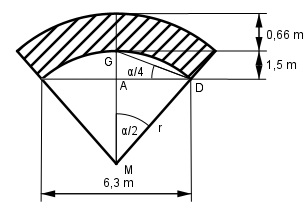

Aufgabe 124 Welche Masse m hat das dargestellte 8 m lange Kellergewölbe mit einer Dichte von 2,25 kg/dm³?

Im Dreieck ADG: 1,5 m tan α/4 = ---------- = 0,4762 --> α/4 = 25,5° 6,3/2 m α/2 = 2 * 25,5° = 51° α = 2 * 51° = 102° Im Dreieck MDA: 6,3/2 m sin α/2 = ----------- |*r r r * sin 51° = 3,15 m |:sin 51° 3,15 m 3,15 m r = ---------- = --------- = 4,05 m sin 51° 0,7771 AGewölbe ist Teil eines Kreisrings: π * ((r + 0,66)2 - r2) * α AGewölbe = ----------------------------- = 360° π*((4,05 m + 0,66 m)2 - 4,052m2)*102° AGewölbe = --------------------------------------- 360° π * 5,8 m2 * 102° AGewölbe = -------------------- = 5,2 m2 360° VGewölbe = AGewölbe * l = = 5,2 m2 * 8 m = 41,6 m³ = 41 600 dm³ mGewölbe = VGewölbe * ρ = = 41 600 dm³ * 2,25 kg/dm³ = 93 600 kg